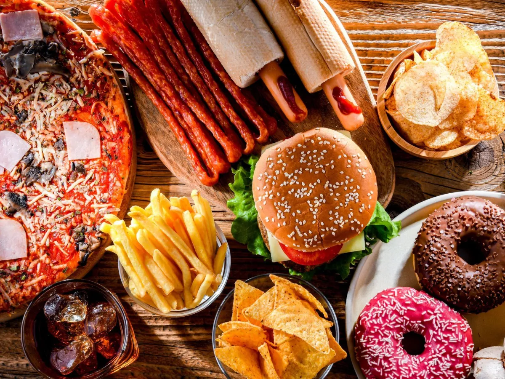
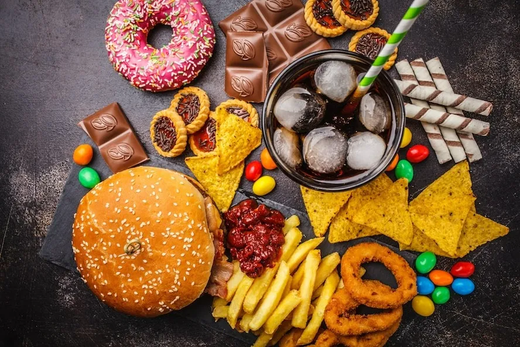
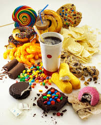

Conhecendo os alimentos: do natural aos industralizados
Alimentos são processados industrialmente principalmente para aumentar sua vida útil (durabilidade), melhorar o sabor, a textura e a aparência, além de oferecer praticidade e conveniência no dia a dia. Eles passam por adições de sal, açúcar ou gorduras, transformando ingredientes in natura para consumo mais rápido ou conservação. Os alimentos processados vêm da modificação de alimentos in natura (naturais) ou minimamente processados, aos quais são adicionados substâncias de uso culinário — como sal, açúcar, óleo ou vinagre — para aumentar sua duração, segurança e palatabilidade. A principal diferença entre alimentos in natura e processados é o nível de intervenção industrial e a adição de substâncias. In natura são alimentos brutos, sem alterações, ricos em nutrientes. Processados são alimentos in natura com adição de sal, açúcar ou óleo para aumentar durabilidade e alterar sabor, muitas vezes com menor valor nutricional.


